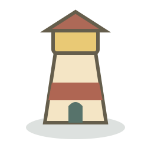
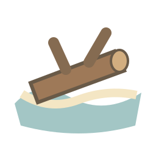
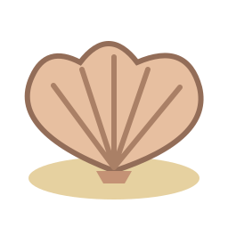
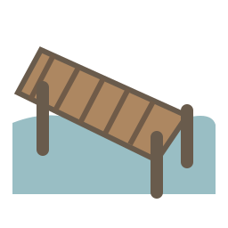
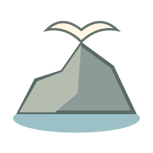
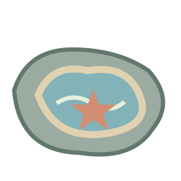

Find and mark
Locate grid references on a map.
Environment artwork · not gameplay screenshots.
A game by Spudacus
Explore a map, one clue at a time.
A puzzle adventure in development, built around fictional maps and coordinate challenges.
Discover the landmarks
Draft artwork from the coastal environment. These are individual map elements, not a finished level.





Locate grid references on a map.
Read coordinates from landmarks.
Practice map-reading habits in fictional scenarios, not operational navigation.
My goal is to build larger puzzles you can revisit over several days, like a jigsaw puzzle on the family table. This is planned, not released.
In development. Release availability is not announced. Features may change.